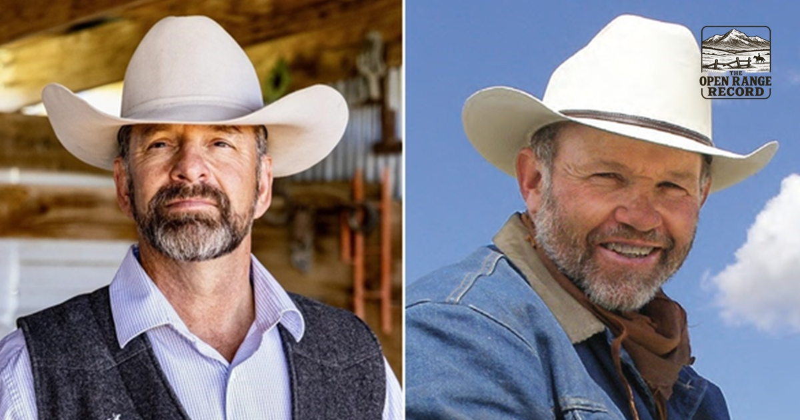

Originally published by The Open Range Record, Nov. 8, 2026.

OPINION
Wyoming voted Tuesday, and the count is in. Two former Speakers of the Wyoming House are saddling up for Cheyenne. They ride in together.
Eric Barlow won the governor's race, and it wasn't close. With 93% of votes counted, he had 125,427 votes, or 68.4%. He carried every county by at least 60%. Albert Sommers got his old House seat back as nobody ran against him in House District 20. Mind you, none of this is official until the state canvassing board certifies it next week.
You don't see a pairing like that often. Barlow ran the House in 2021 and 2022. Sommers took the gavel right after him, in 2023 and 2024.
How the Count Went
The Associated Press called the race about as soon as the polls closed that evening. Constitution Party nominee Rebecca Bextel drew 30,710 votes, or 16.8%. Democrat Ken Casner drew 27,136, or 14.8%.
Bextel came at the Republican straight from the right. She ended up a long way back in second. Casner ran on simpler voting and more room for independent candidates.
"We look forward to working together to make Wyoming stronger, more prosperous and more independent," Barlow told WyoFile. He takes the oath on Jan. 4, 2027, as the state's 34th governor.
Two Ranchers, Two Corners of the State
Barlow ranches and doctors animals out of Gillette. He served in the House from 2013 to 2022, then moved over to the Senate in 2023. He calls himself a fourth-generation ranch kid from northeast Wyoming. Before he was Speaker, he was House Majority Floor Leader in 2019 and 2020. Sommers held that same job in 2021 and 2022. Both men learned the House from the ground up.
Sommers has run cattle near Pinedale all his life. He served House District 20 from 2013 until early 2025. In 2024 he tried for the state Senate and lost the primary, 46.8% to 42.8%. He didn't stay out of the saddle long. "That race didn't go my way, and I respected the outcome," Sommers said in April. The man holding the seat, Rep. Mike Schmid, decided not to run again.
Senator Barlow won the August Republican primary with 58,825 votes. That came to about 45% of the vote. Megan Degenfelder drew about 30%, and Brent Bien about 24%.
Gov. Mark Gordon is term-limited, so the gate was open. Sommers won his own primary with 2,063 votes, or 62.3%. Nobody else was on the November ballot for his district.
Where the Two Men Stand
Wyovote.com ranks all 93 lawmakers each session, from most to least conservative. In 2026, the Gillette senator came in 64th, in the least conservative third. He was 71st in 2025 and 52nd in 2024.
Sommers last voted in 2024, when he ranked 66th of 93. Both men sit in the bottom half of the list. That puts them on the moderate side of their party.
Their critics don't mince words about it. Bextel warned of four more years of "managing the status quo." Bill Winney, a rival of Sommers, said, "I don't see him as being particularly conservative."
Voters heard all that and backed both men anyway. Nothing says change in Cheyenne like sending the old trail bosses back up the same trail.
A Speaker Who Drew Fire
Sommers made some enemies as Speaker. He held back some bills on social issues. One would have made schools tell parents about major health changes in their kids. Another, a ban on sex changes for minors, went to a committee and died there.
Both bills came back in later years, and both are law today. Sommers pointed to a tough schedule and possible constitutional problems. His detractors didn't buy it, and folks here have long memories.
Property Tax Is the First Test
Proposition 1 was on the same ballot. It would exempt half the value of a primary home from property tax. The new governor was against it.
"I do not support it, and we have done a lot," he said at an October debate. He says he backed five measures that cut the property tax load. He wants to see how those work before he does more.
His votes match his words. In February he voted against SJ0003, a plan to end property tax on homes. It failed to be introduced, 7-24. He also voted no on SF0086, a property tax relief authority, which failed 14-17.
Sommers talks property tax too. "As Speaker of the House, I prioritized responsible property tax relief," he wrote. Whatever voters did with Prop 1, these two will own what comes next.
Water, Schools, and Hospitals
Both men put water near the top of the list, and out here that's no surprise. Barlow names education, healthcare, and water rights, including the Colorado River. Sommers said, "Water is probably my No. 1 topic, followed just by good governance."
Sommers says he helped start the Wyoming Colorado River Advisory Committee. He also worked to steer money to rural hospitals. On healthcare, the incoming governor wants more than talk after years of task forces. "There's probably some bigger bites that need to be taken," he said.
On schools, he has backed big building budgets. He voted for HB0105, a school facilities bill that passed the Senate 25-4 in February. Gov. Mark Gordon signed it into law on March 5 as Chapter 39. Those votes cost money, and his critics on the right took note.
The winning campaign raised $2,050,517 from 2,229 donors, according to state filings. Sommers raised $105,436 from 124 donors. A statewide race eats a lot more feed than a House seat, so the gap is no surprise.
What to Watch
Now that both men have won, keep an eye on the first budget. Sommers wants "less political theater and theatrics." Barlow says people "want a place where young people can stay."
Watch the House floor too. Sommers comes back as one hand among 62, not as the foreman. How he works with the current leaders will tell us plenty.
Two former Speakers know where every gate and lever sits in the Capitol. The question is whether they ride together or split at the first fork. Wyoming starts to find out in January.
Originally published by The Open Range Record, Nov. 8, 2026.